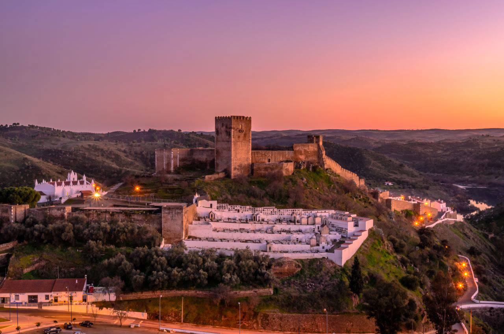
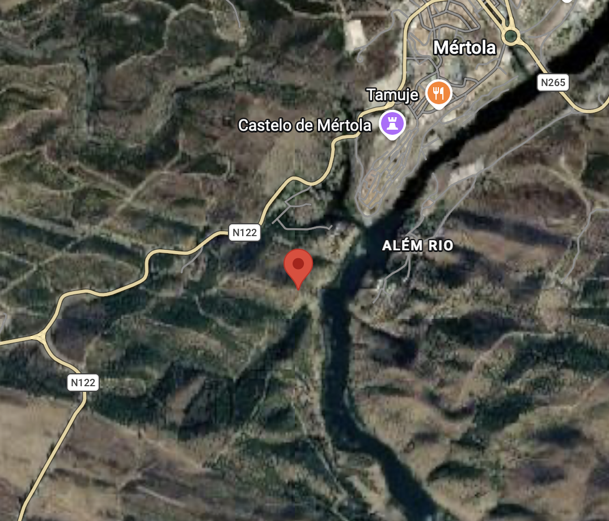
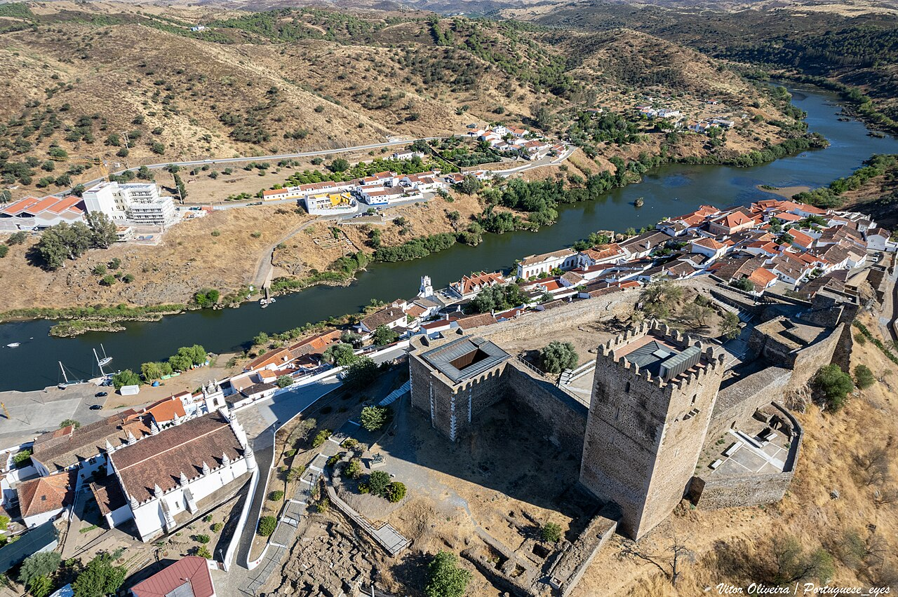
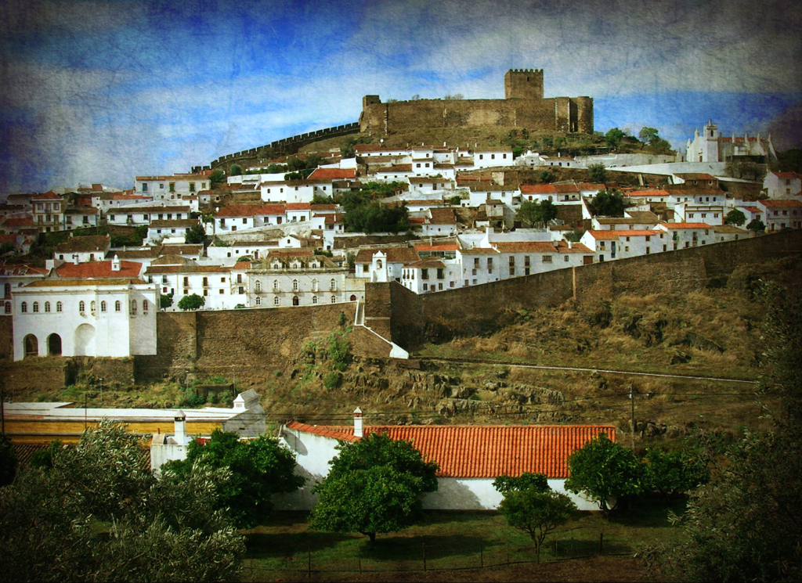
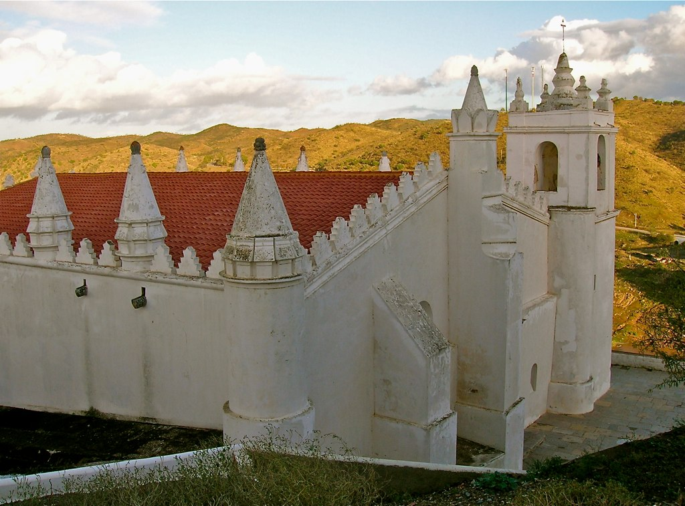
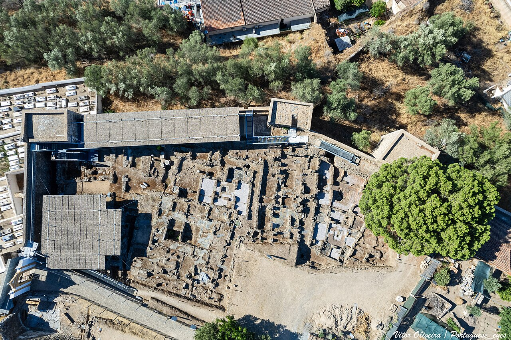
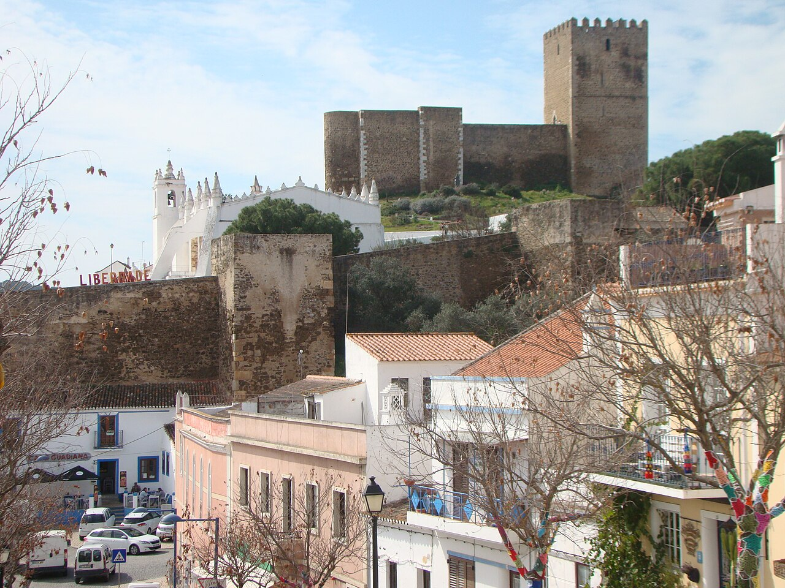

NUTS (NUTS 2024, Reg. 2023/674): NUTS I PT1 Continente (grandes regiões) · NUTS II PT18 Alentejo (Évora, 47 municípios, 4 NUTS III, CCDR — política regional) · NUTS III Baixo Alentejo (diagnóstico fino; CIMBAL 2009 Beja; Guadiana/Alqueva, montado, mina, fronteira Andaluzia).
13 municípios: Aljustrel, Almodôvar, Alvito, Barrancos, Beja, Castro Verde, Cuba, Ferreira do Alentejo, Mértola, Moura, Ourique, Serpa, Vidigueira (62 freguesias). 7 freguesias de Mértola: Alcaria Ruiva, Corte do Pinto, Espírito Santo, Mértola, Santana de Cambas, São João dos Caldeireiros, U.F. S. Miguel do Pinheiro/S. Pedro de Solis/S. Sebastião dos Carros. Mértola = 6.º maior município PT (1 292,87 km²). Sítio: 37.632744°N -7.668297°W, 63.1 m.
| Indicador | Mértola | NUTS III | Ano | Fonte/tabela |
|---|---|---|---|---|
| População residente | 6206 | 114863 | 2021 | INE Censos 0012276 / Pordata População Residente |
| Variação 2011–2021 (%) | -14,7 | -9,3 | 2011–21 | INE Censos Resultados Definitivos / Pordata |
| Área (km²) | 1292,87 | 8542,72 | 2024 | INE Superfície NUTS-2024 / Pordata (INE/DGT) |
| Densidade (hab/km²) | 4,8 | 13,4 | 2021 | INE Densidade NUTS-2024 (cálculo) |
| Índice envelhecimento Censos | 418,3 | 217,9 | 2021 | INE 0012276 (2284/546; 31694/14543) / Pordata 458 |
| Índice envelhecimento estimativa | 414,2 | 210,2 | 2025 | INE 0012909 rev.22/06/2026 / Pordata |
| Proporção 65+ (%) | 36,8 | 27,6 | 2021 | INE 0012276 |
| Alojamentos total (clássicos) | 8675 (8664) | 85741 (85332) | 2021 | INE 0012500 Dim3 T/11 / Pordata Alojamentos |
| Superior completo (%) HM | 9,39 | 14,83 | 2021 | INE 0012316 / Pordata Escolaridade-207 |
| Taxa desemprego (%) HM | 6,67 | 8,10 | 2021 | INE 0012328 / Pordata Emprego |
| Poder compra IpC PT=100 | 70,42 | 86,45 | 2023 | INE 0014580 / Pordata Rendimentos-209 |
| Poder compra IpC PT=100 (série ant.) | 68,89 | 85,24 | 2021 | INE 0008614 NUTS-2013 |

Quadro INE/PORDATA (EXTRAÇÃO API INE 2026-09-24). Pordata (FFMS) fonte INE; células JS exigem print manual.
Estado — Verão seco: verde mato, ocre xisto, Guadiana encaixado, branco-bege.
Fonte — Ortofoto 23/09/2026.
Implicação — Terra-cal-madeira.
Estado — Xisto/grauvaque Formação Mértola, litossolos erosíveis.
Fonte — LNEG 46-D + PDM/REN a confirmar.
Implicação — Sondagem, drenagem.
Estado — PNVG + RN2000; azinho, esteva; Bonelli; lince.
Fonte — ICNF + eBird cidadão.
Implicação — Inventário, nativas.
Estado — Baixa-moderada; S Mértola M0.8–1.5 08/2026.
Fonte — IPMA + EC8/PDM a confirmar.
Implicação — EC8-PT.
Estado — 63.1 m fora leito; escorrência encosta.
Fonte — APA PGRI RH7 T100 a sobrepor.
Implicação — Margens, soleiras.
Estado — Perigosidade estival alta; histórico parcela desc.
Fonte — ICNF SGIF + PMDFCI a confirmar.
Implicação — Faixa, M1.
Estado — Baixo; N122 difusa.
Fonte — APA/PDM sem medições.
Implicação — Medir, afastar.
Estado — Vila 0.5–1 km: CM, saúde, escolas, museu.
Fonte — CM + ULSBA.
Implicação — Acesso, acessibilidade.
Estado — Xisto/taipa/cal; sem edifício no pin.
Fonte — CAM 2015 + UNESCO 6209.
Implicação — Baixa contextual, levantamento.
Síntese EPW + IPMA + Csa · duas regras de volumetria (P3)
Três regras vernáculas · duas obras · uma tendência, com créditos (P4)

Paredes mestras com massa + reflexão; ex. intramuros e montes. Fonte: Rosado/Costa et al.

Adaptada ao declive, cozinha a tardoz + quintal/cisterna; ex. baixa rua Direita/porto vs alta. Mesmo fonte.

Vãos pequenos, panos/pátios de sombra + ventilação; ex. centro e souk. FIM

Obra A — Núcleo de Arte Islâmica (antigo celeiro, Porta da Ribeira) — autoria: Cláudio Torres e Santiago Macias (+ Alegria/Ramôa) — 2001 (21/12). Coleção séc. 9–13 das escavações da Alcáçova. Museu

Obra B — Casa Romana (cave dos Paços, Praça Luís de Camões; pós-incêndio 1982/achados 1984; arquiteto individual não nomeado — declarado) — CM/CAM — 1988, remod. 2012/2017. Museu
Estado de confirmação: A e B confirmadas via museudemertola.pt; verificação no local pendente (peças, atelier, município).
Uma tendência — Mértola Vila Museu: museu difuso de 14 núcleos + Festival Islâmico bienal + Artesanato→Design. FIM · RR 2022
Vila Museu + PNVG/RN2000 adjacente – capital cultural/paisagem.
Folga edificada: 8675 aloj./6206 hab. 2021 INE 0012500/0012276 – reabilitar primeiro.
418,3 índice + 36,8% 65+ 2021 INE 0012276, só 9,39% superior INE 0012316.
IpC 70,42 2023 INE 0014580, densidade 4,8 INE – mercado frágil.
Csa, amplitude 13-17°C, NW 4.6m/s verão P3 – massa+flush+pátio.
Encosta 63.1m fora leito, 0.5-1km vila/serviços – coser N122-Guadiana.
Trombas outono 92.6mm 21/10/20 + fogo estival ICNF.
Natura/REN/hídrico + sismo por confirmar.